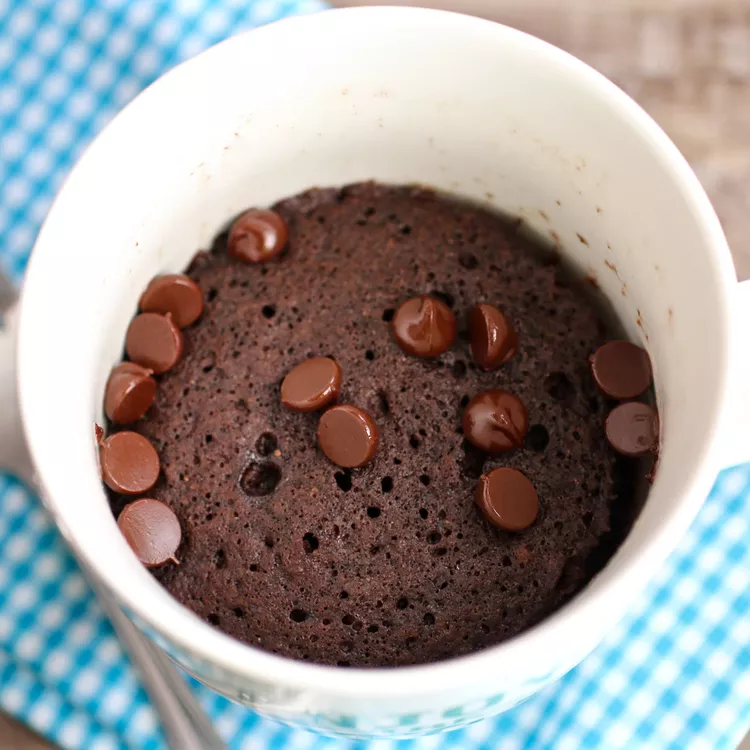
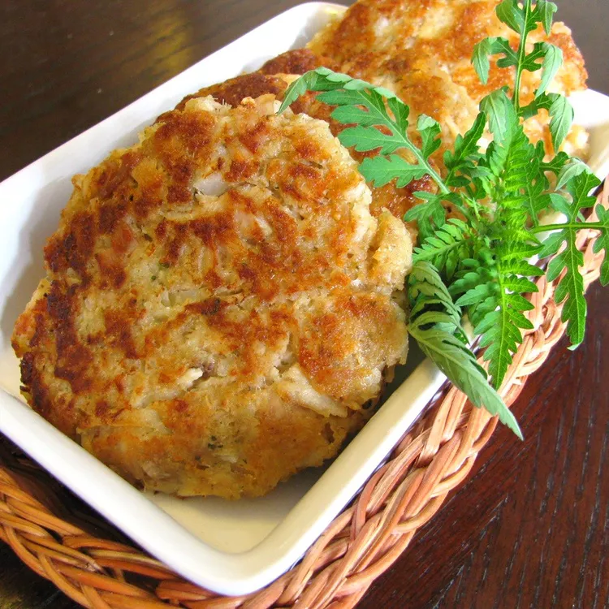

Chocolate Mug Cake
This chocolate mug cake is made in the microwave for a fudgy, chocolaty treat that is truly decadent.
French Toast

This fabulous French toast recipe works with many types of bread — white, whole wheat, brioche, cinnamon-raisin, Italian, or French! Delicious served hot with butter and maple syrup.
Easy Tuna Patties
Making homemade tuna patties couldn't be easier: Combine the ingredients, shape the mixture into patties, and fry the patties until golden brown.
Easy Salmon

This easy salmon recipe is a delicious way to prepare fresh fillets using just a few ingredients from your pantry.